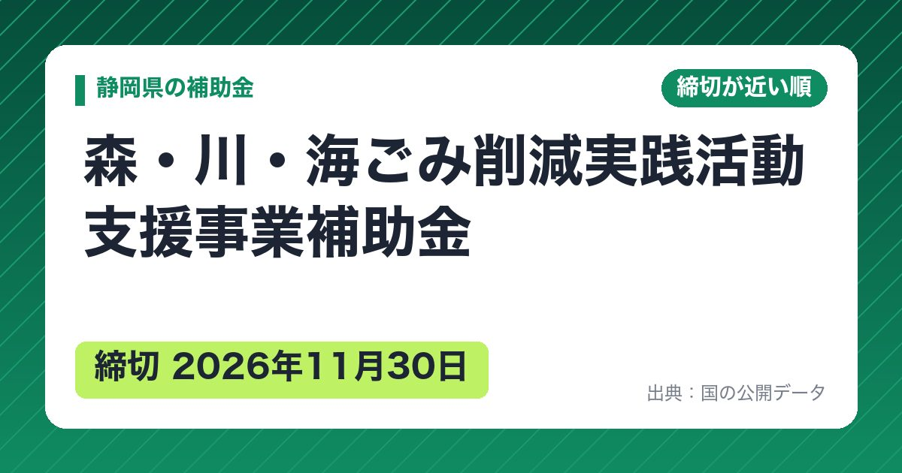

森・川・海ごみ削減実践活動支援事業補助金

締切 2026年11月30日｜上限 10万円
清掃活動の費用を助成します！！ きれいな海を未来に残していくために、清掃活動を行いませんか？
概要
| 対象地域 | 静岡県 |
|---|---|
| 補助上限額 | 10万円 |
| 補助率 | 対象経費の金額を上限10万円まで補助 |
| 受付期間 | 2026年4月13日 〜 2026年11月30日 |
| 対象の従業員数 | 従業員数の制約なし |
| 利用目的 | 新たな事業を行いたい / イベント・事業運営支援がほしい / まちづくり・地域振興支援がほしい / エコ・SDGs活動支援がほしい |
| 対象業種 | 複合サービス事業 / サービス業（他に分類されないもの） / 公務（他に分類されるものを除く） / 分類不能の産業 / 生活関連サービス業、娯楽業 / 教育、学習支援業 / 医療、福祉 |
公募の内容（原文の抜粋）
※Jグランツで本補助金の申請受付を行っておりません。申請手続き等の詳細については、以下HPをご確認ください。
https://www.pref.shizuoka.jp/kurashikankyo/recycle/1040876/1077141.html
■目的・概要
海洋プラスチックごみ等が海に与える影響を軽減するため、森・川・海等においてプラスチックごみの回収等、清掃活動を行う団体に対して清掃活動支援団体から補助金を交付します
≪本年度の清掃活動の申し込みは、予算額に達したため、受付を終了しました≫
■対象経費
森・川・海等において、プラスチックごみ（ペットボトル、食品トレー等）の回収等、清掃活動に要する経費
（対象経費の金額を上限10万円まで補助）
■応募資格
森・川・海等において、プラスチックごみ（ペットボトル、食品トレー等）の回収等、清掃活動を 行う団体
《交付の条件》
1．清掃活動に対し、県の支援制度を活用していないこと
2．清掃活動を行う人数は、1回あたり5人以上とする
3．補助申請は、1団体につき1回限りとする。ただし、1回の補助申請につき複数回の清掃活動を行うことをさまたげない
■申請方法
郵送（レターパック・簡易郵便など配達記録の残る方法）、電子メール、受付窓口への持参
※清掃活動を実施しようとする日の10日前までに申請してください
※予算がなくなり次第終了
※予算額に達した場合、以下に記載の募集終了日時に関わらず、予算額に達した日に受付をした申請書（不備があるものを除く。）から抽選で決定します
書類の提出先については、清掃活動を行う場所別に窓口を分けています。
以下の「問合せ先」にてご確認ください。
■申請受付期間
令和8年4月14日（火曜日）～令和8年11月30日（月曜日）
※清掃活動を実施しようとする日の10日前までに申請してください
※予算がなくなり次第終了
※予算額に達した場合、達した日に受付をした申請書（不備があるものを除く。）から抽選で決定します。
≪本年度の清掃活動の申し込みは、予算額に達したため、受付を終了しました≫
■問合せ先
詳細は清掃活動支援団体、又は静岡県廃棄物リサイクル課までお問い合わせください。
静岡県くらし・環境部環境局廃棄物リサイクル課
〒420-8601 静岡市葵区追手町9-6
電話番号：054-221-2426
ファクス番号：054-221-3553
hai@pref.shizuoka.lg.jp
《清掃活動支援団体》
■海の清掃
美しく豊かな静岡の海をつなぐ会
〒424-0922 静岡市清水区日の出町9-25 清水マリンビル2階（054-340-1800）
https://tsunagukai.or.jp/news/20260414.html
■森・川・その他の清掃
静岡県環境衛生自治推進協会連合会
〒420-8601 静岡市葵区追手町9-6 廃棄物リサイクル課内（054-221-2426）
https://www.pref.shizuoka.jp/kurashikankyo/recycle/1040876/1077141.html
申請前の準備
- GビズIDプライム（電子申請に必須・無料・発行まで1〜2週間かかることあり）：gbiz-id.go.jp
- 直近の決算書（個人事業主は確定申告書の控え）
- 事業計画（何に使い、どう売上・生産性が上がるか）
- 見積書（買う物・頼む工事の）
ほとんどの補助金は、申請時に直近の決算書（個人は確定申告書）が必要で、交付後も経費の帳簿が求められます。
広告準備に使えるサービス：
・無料の会計自動化ソフト マネーフォワード クラウド会計  （法人の帳簿・決算書づくりを自動化）
（法人の帳簿・決算書づくりを自動化）
・やよいの青色申告オンライン  （個人事業主の青色申告に）
（個人事業主の青色申告に）
静岡県のほかの補助金
- 令和７年度（補正） 商用車等の電動化促進事業（建設機械）（締切 2027年1月29日）
- 携帯電話等エリア整備事業（締切 2027年3月31日）
- 電波遮へい対策事業（トンネル）（締切 2027年3月31日）